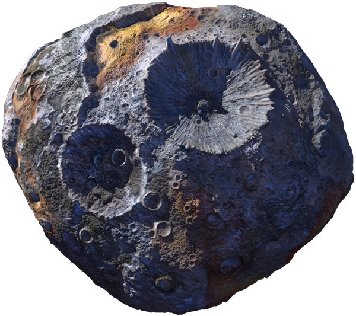

Psyche is a metallic asteroid located in the asteroid belt between Mars and Jupiter. It is believed to be the exposed core of a protoplanet that was destroyed by a collision with another object. Psyche is about 226 kilometers (140 miles) in diameter and is made mostly of iron and nickel. It is the most massive metallic M-type asteroid known in the solar system.
You should be able to move the asteroid, zoom into it, and zoom out. Go on... don't be shy - explore away!
The Psyche asteroid was named after the Greek mythological figure Psyche,
who was the lover of the god of love, Eros. This naming convention is consistent
with the tradition of naming asteroids after mythological figures, particularly
those related to love, beauty, and the arts. The asteroid was discovered in 1852
by the Italian astronomer Annibale de Gasparis and was named Psyche in 1853 by
the English astronomer John Russell Hind.
According to Greek mythology, Psyche was a mortal woman who was so
beautiful that she was worshipped as a goddess. She was beloved by
the god of love, Eros (also known as Cupid), but their love was not
permitted by his mother, the goddess Aphrodite.